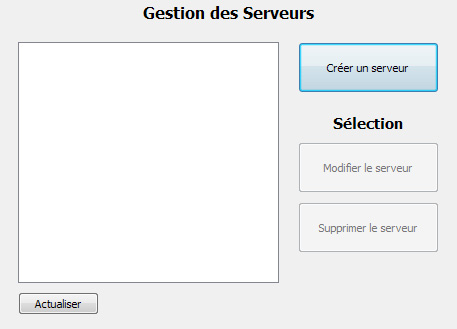
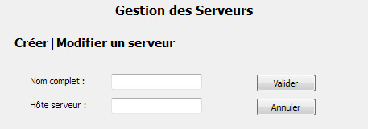

Documentation client
Administration : serveurs
L'interface de gestion des serveurs permet aux administrateurs de créer, modifier et supprimer des serveurs.

Les boutons de modification et suppression d'un serveur s'activent lors de la sélection d'un serveur dans la liste.
Créer ou modifier un serveur
Lors de la création d'un serveur, le nom et l'hôte sont demandés.
Lors de la modification d'un serveur sélectionné dans la liste, le nom et l'hôte actuels sont renseignés et peuvent être modifiés.
Les interfaces de création et de modification d'un serveur sont identiques.

Supprimer un serveur
Lors de la suppression d'un serveur sélectionné dans la liste, ses informations sont supprimées de la base de données. Tout mot de passe associé à ce serveur sera également supprimé de la base de données.